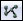
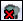

UDN
Search public documentation:
MainEditorToolbar
日本語訳
中国翻译
한국어
Interested in the Unreal Engine?
Visit the Unreal Technology site.
Looking for jobs and company info?
Check out the Epic games site.
Questions about support via UDN?
Contact the UDN Staff
中国翻译
한국어
Interested in the Unreal Engine?
Visit the Unreal Technology site.
Looking for jobs and company info?
Check out the Epic games site.
Questions about support via UDN?
Contact the UDN Staff
Main Editor Toolbar
Overview
Maps
Create a New Level
Creates a new map, first prompting to save any open levels that are unsaved or that have changed since last save.Open an Existing Level File
Opens an existing map, first prompting to save any open levels that are currently unsaved. A list of the most recently opened maps is available by clicking on the adjacent button.Toggle Map File As Favorite
Save Current Level
Saves the 'current level' (as specified in the Level Browser). Only saves if the current level is unsaved or has changed since last save. If source control is enabled and the current level needs to be checked out from source control to be saved, you will be prompted to check out the package.Save All Levels
Save All Writable Packages
Saves all packages which are writable and have been saved previously to disk. This will not prompt to checkout packages under source control and will not save new packages which do not already exist on disk.Undo/Redo
Undo the Last Action
Undo the last action in the transaction stack.Redo the Previously Undone Action
Redo the last undone action in the transaction stack.Widget
Selection Mode
Toggles whether objects can be transformed. When enabled, objects cannot be translated, rotated, or scaled.Use translation widget.
In translation mode, the widget will translate (move) the selected actors.Use rotation widget
Sets the widget to rotation mode, in which selected actors will rotate about the pivot point.Use uniform scaling widget
Use non-uniform scaling widget
Sets the widget to non-uniform scaling mode. In this mode, dragging the individual widget handles will scale the selected actors along specific directions. Note that activating the non-uniform scaling widget will automatically convert the widget's reference coordinate system to 'Local'.Reference coordinate system
Search
Find Actors
Browser
Content Browser
Opens the Content Browser, which allows the user to search for assets.Editors
Kismet Editor
Opens the Kismet editor, which allows the user to edit Kismet sequences on the current level.Matinee Editor
Allows the user to open any matinee sequences on the current level.Viewport Camera
Distance to far clipping plane
Controls the far clipping plane distance in the perspective level viewport. The clipping plane moves closer to the camera as the slider moves left. Often an editor performance benefit when rendering perspective views of large, complex levels.Selection
Allow Translucent Selection
Allows objects with translucent materials to be selectedEncompass to Select
When enabled, and object must be entirely encompassed by the selection box to be selected.Misc
Toggle fullscreen
Toggles editor 'Fullscreen' mode. If enabled, UnrealEd maximizes and its titlebar disappears.Toggle Real Time Audio
Toggles Real Time Audio in the perspective viewport. Right click to adjust volume.Building
Build Geometry for Visible Levels
Builds geometry for the 'Current Level', as specified in the Level Browser.Build Lighting
Brings up the 'Lighting Build Options' dialog, pictured belowBuild Paths
 Builds paths for all visible levels. Note that this may result in invalid information in levels containing pathing that are not visible at build time.Build Cover Nodes
Builds cover nodes all visible levels. Note that this may result in invalid information in levels containing cover nodes that are not visible at build time.Build All
Builds geometry, lighting, pathing and cover nodes for all visible levels.Build All and Submit to Source Control
 Builds geometry, lighting, pathing and cover nodes for all visible levels and commit the built levels to source control.Lighting Quality Setting
| Action | Description |
|---|---|
| Left Mouse click | Cycle through quality setting options. |
| Right Mouse click | Directly set the quality for the lighting build. |
Launch buttons
| Action | Description |
|---|---|
| Left Mouse click | Launch on the specified platform. |
| CTRL + Left Mouse click | Launch in spectator mode. |
| Right Mouse click | Edit launch URL. |